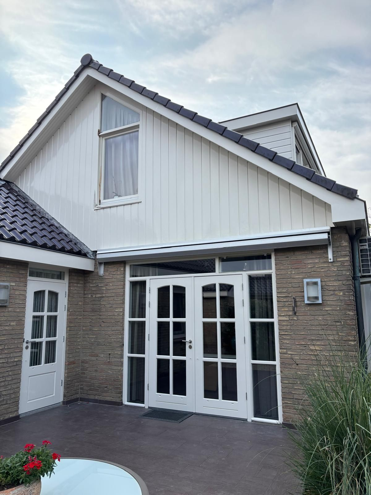
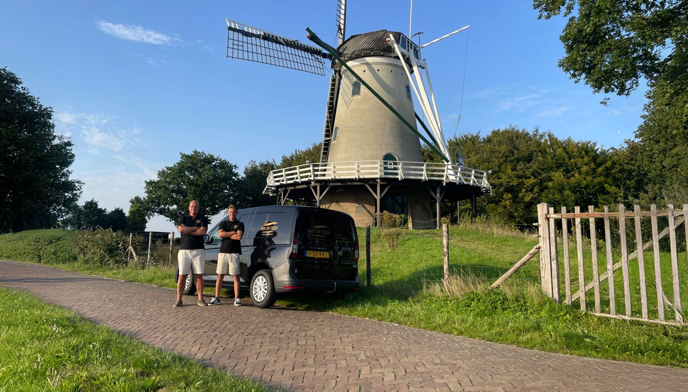
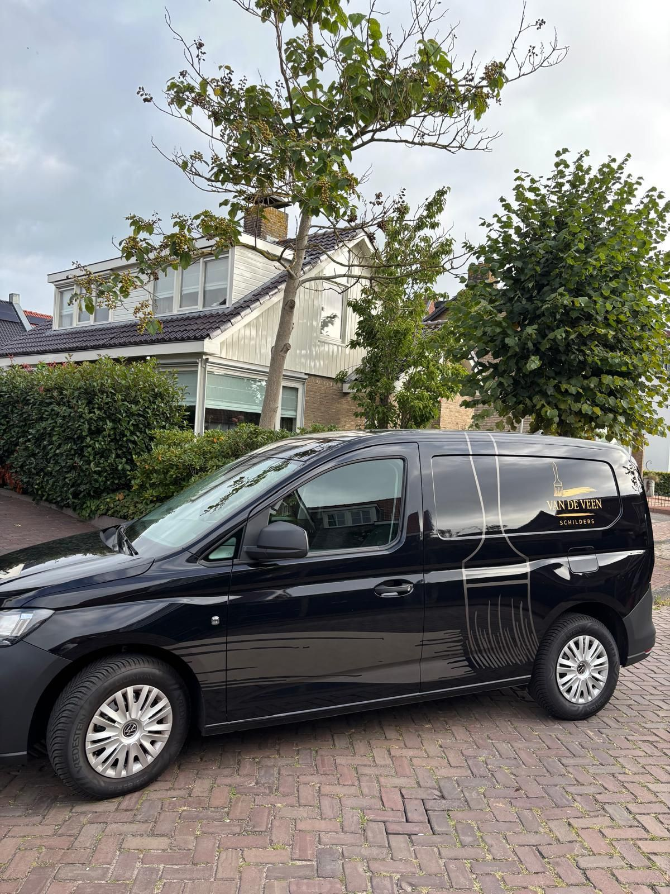
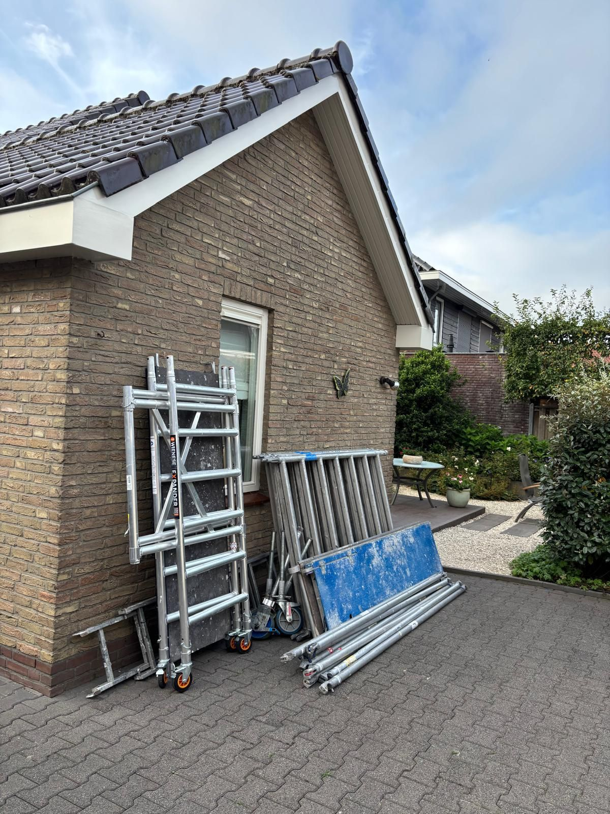
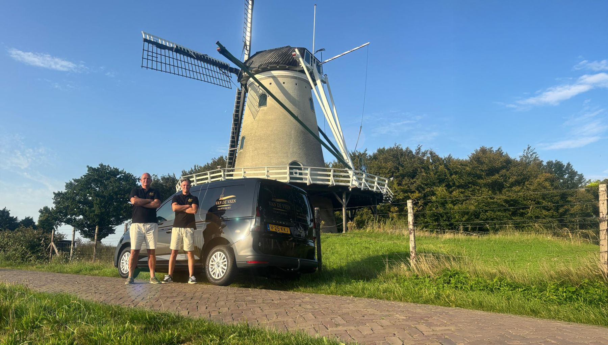

Schilder uit Soest
Wij zijn Nico en Nick, een hecht team van vader en zoon. Samen combineren we vakmanschap met een moderne aanpak. Altijd met oog voor kwaliteit, betrouwbaarheid en service.

Onze diensten

Perfect voor een nieuwe uitstraling van je interieur. Voor uw wanden, plafonds, kozijnen, deuren en trappen.
Beschermt je woning tegen weer en wind. Voor uw gevels, muren, kozijnen en deuren, dakkapellen, goten en boeidelen.

Behang dat perfect is begint bij voorbereiding. We brengen het behang strak en naadloos aan.

Niet zeker van de juiste kleur? Wij helpen je kiezen. Advies op locatie. Wij werken met kleurenwaaiers en proefvlakken.
Van de Veen Schilders BV is een hecht familiebedrijf uit Soest, gespecialiseerd in binnen- en buitenschilderwerk voor particulieren. Met vakmanschap, betrouwbaarheid en oog voor detail zorgen wij ervoor dat jouw woning er weer als nieuw uitziet.
Heb je houten kozijnen die wel wat liefde kunnen gebruiken? Of twijfel je over de juiste kleur voor je muur? Geen zorgen, wij denken met je mee. Van strak schilderwerk tot persoonlijk kleuradvies: we zorgen dat alles klopt, tot in de puntjes.
Hoe gaan we te werk?
Wij geloven in maatwerk voor elk project. Bij het uitvoeren van binnen en buiten schilderwerk beginnen we altijd met een grondige inspectie van de ruimte.
Daarna bespreken we je wensen en adviseren we je over de beste verfsoorten en kleuren.
Elk project is anders, dus je ontvangt van ons altijd een vrijblijvende offerte na een inspectie en kennismaking.
Wij werken efficiënt en zorgvuldig, zodat jouw schilderproject snel en netjes wordt afgerond.
Of het nu gaat om één kamer of een heel huis, wij staan voor je klaar met onze expertise.
Projecten



Ervaringen
“Wat een verademing! Nico en Nick hebben onze woonkamer en trap geschilderd en het resultaat is echt boven verwachting. Ze dachten mee over kleurkeuze, kwamen hun afspraken perfect na en lieten alles netjes achter. Vakmannen met een glimlach! Wij raden Van de Veen Schilders aan iedereen aan.”
Fam van Langen, Amersfoort
“Onze woning heeft dankzij Van de Veen Schilders weer uitstraling! De houten kozijnen en gevel zien er als nieuw uit. Ze werken netjes, snel en met zichtbaar plezier in hun werk. Fijn contact, duidelijke communicatie én binnen de afgesproken tijd klaar. Topervaring.”
Martijn en Sanne, Soest
Veelgestelde vragen
Wij bieden professioneel binnen- en buitenschilderwerk voor particulieren. Van het strak schilderen van wanden, plafonds en kozijnen tot het beschermen van je gevel of het herstellen van houtrot. Daarnaast geven we kleuradvies op maat, zodat jouw huis niet alleen fris oogt, maar ook helemaal bij je past. Kortom: alles wat je nodig hebt om jouw woning weer te laten stralen.
Gemiddeld elke 5 tot 7 jaar voor buitenwerk. Binnen hangt het af van gebruik en lichtinval, maar meestal zo’n 8 tot 10 jaar. Wij geven altijd eerlijk advies op maat!
Zeker! We werken met A-kwaliteit verfmerk Sikkens (vergelijkbaar met Sigma of Trimetal) en adviseren je graag over kleuren die passen bij jouw huis én stijl.
Jazeker! We bieden los kleuradvies aan, of als onderdeel van een complete schilderopdracht. Met kleurwaaiers, samples en een goed gevoel voor stijl helpen we je de juiste sfeer te vinden.
Absoluut. Elk project is anders, dus je ontvangt van ons altijd een vrijblijvende offerte na een inspectie en kennismaking.
Staat je vraag er niet bij of heb je andere wensen? Neem gerust contact met ons op, we helpen je graag verder.
Gratis offerte
Elk project is anders, dus je ontvangt van ons altijd een vrijblijvende offerte na een inspectie en kennismaking.